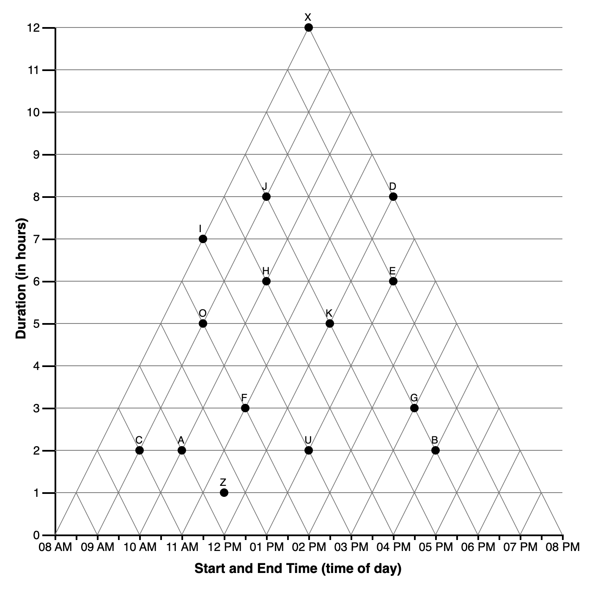
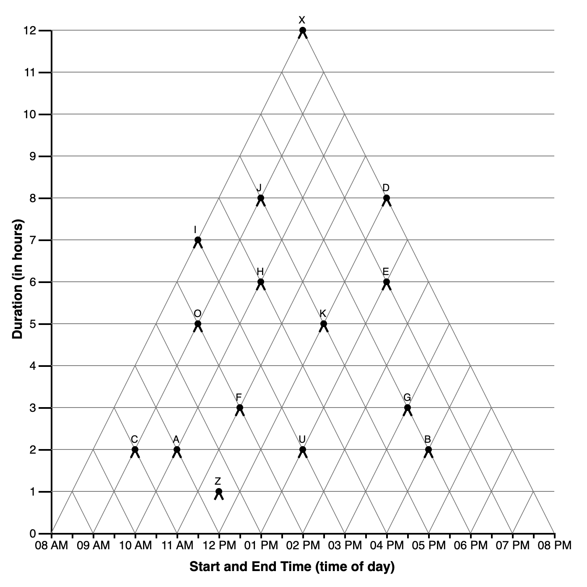
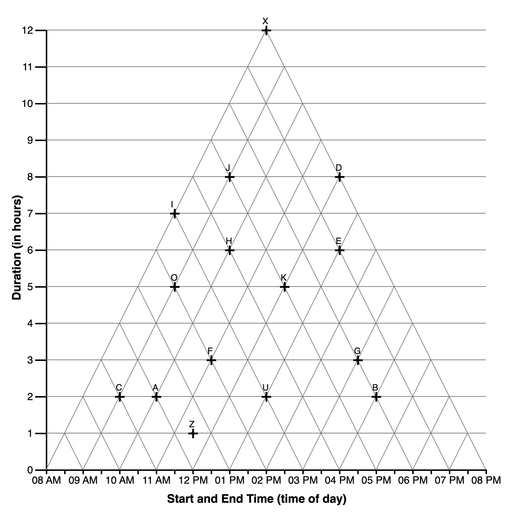

CODE
library(codebook) #data dictionary
library(tidyverse) #ALL THE THINGS
library(kableExtra) #tables
#set some output options
library(dplyr, warn.conflicts = FALSE)
options(dplyr.summarise.inform = FALSE)
options(scipen=1, digits=3)Study SGC4B | 1 Introduction
In Study 4A we explore the extent to which the design of the marks indicating data points influence how a reader interprets its underlying coordinate system.
|  | Point Demo: 111 |
|  | Arrow Demo: 1112 |
|  | Cross Demo: 1113 |
library(codebook) #data dictionary
library(tidyverse) #ALL THE THINGS
library(kableExtra) #tables
#set some output options
library(dplyr, warn.conflicts = FALSE)
options(dplyr.summarise.inform = FALSE)
options(scipen=1, digits=3)# HACK WD FOR LOCAL RUNNING?
imac = "/Users/amyraefox/Code/SGC-Scaffolding_Graph_Comprehension/SGC-X/ANALYSIS/MAIN"
# mbp = "/Users/amyfox/Sites/RESEARCH/SGC—Scaffolding Graph Comprehension/SGC-X/ANALYSIS/MAIN"
setwd(imac)
#IMPORT DATA
df_subjects <- read_rds('analysis/SGC4B/data/0-study-level/sgc4b_participants.rds')TODO UPDATE CONDITION NAMES
title = "Participants by Condition"
# cols = c("CONTROL","COND1","COND3","TOTAL")
cont <- table(df_subjects$term, df_subjects$condition)
cont %>% addmargins() %>% kbl(caption = title) %>% kable_classic()| 11111 | 1112 | 1113 | Sum | |
|---|---|---|---|---|
| winter22 | 91 | 98 | 83 | 272 |
| Sum | 91 | 98 | 83 | 272 |
# , col.names = cols) %>% kable_classic()Experimental Hypothesis:
Null Hypothesis: ….
Exploratory Questions
We employed a mixed design with 1 between-subjects factor with 2 levels (Scaffold: control, impasse) and 15 items (within-subjects factor).
Independent Variables:
Dependent Variables:
Stimuli consisted of a series of 15 graph comprehension questions, each testing a different combination of time interval relations, to be read from a Triangular-Model graph. Figure 10.1. The list of questions can be found here.

In each experimental
Participants completed the study via a web-browser.
(1) Upon starting, they submitted informed consent, before reading task instructions.
(2) Participants were introduced to a scenario in which they were to play the role of a project manager, scheduling shifts for a group of employees. The schedule of the employees was presented in a TriangularModel (TM) graph, and they would be answering question about the schedule.
(3) Then participants completed an experimental block of 15 items.
(3A) The first five items in the task are defined as the SCAFFOLDING block. In the IMPASSE condition, the first five questions included an IMPASSE problem state. For participants in the CONTROL condition, the dataset was structure such that there was always an available ‘orthogonal answer’ for the first 5 questions.
(3B) The remaining 10 items are defined as the TESTING block. In both conditions, these questions were not structured as impasse (i.e. contained an available orthogonal answer)
(4) Following the experimental block, participants answered a free-response question about their strategy for reading the graph, followed by a demographic questionnaire and debrief.
Data were collected by convenience sample of a university subject pool … ANALYSIS
Data were collected via a custom web application and stored in a NoSQL database. The following exclusion criteria were applied during data cleaning:
| Pre-Requisite | Followed By |
|---|---|
| winter2022_clean_sgc4b.Rmd | 2_sgc4B_scoring.qmd |
The underlying data structure of the stimulus web application changed across the data collection period, resulting in slightly different data files (i.e. columns are not named consistently). In this section, we combine the files from each data collection period into a single harmonized data file for analysis (one for participants, one for items).
First we import participant-level data, selecting only the columns relevant for analysis. The result is a single data frame df_subjects containing one row for each subject (across all periods). Note that we are not discarding any response data. Rather, we discard columns that are automatically recorded by the stimulus web application and help the application run.
Note that we discard some columns representing scores calculated in the stimulus engine. These scores were calculated differently across collection periods, and so we discard them and recalculate scores in the next analysis notebook. No raw data (responses and response times) are discarded, only algorithmically-derived scores for the responses.
#IMPORT PARTICIPANT DATA
# HACK WD FOR LOCAL RUNNING?
imac = "/Users/amyraefox/Code/SGC-Scaffolding_Graph_Comprehension/SGC-X/ANALYSIS/MAIN"
# mbp = "/Users/amyfox/Sites/RESEARCH/SGC—Scaffolding Graph Comprehension/SGC-X/ANALYSIS/MAIN"
setwd(imac)
#import file
df_subjects <- read_rds("analysis/SGC4B/data/0-study-level/sgc4b_participants.rds") #use RDS file as it contains metadata
#NO EXPLANATION COLUMN IN SGC4B DATASET; TRIAL NOT COLLECTED
#save 'explanation' columns from winter22, which is actually a response to a free response item (Q16); was recorded with item_level data in old webapp
# df_q16 <- df_subjects %>%
# select(subject, condition, term , mode, explanation) %>%
# mutate(
# q = 16,
# response = explanation
# ) %>% select(-explanation)
#reduce data collected using NEW webapp to useful columns
df_subjects <- df_subjects %>%
mutate(score = absolute_score,
pretty_condition = recode_factor(condition, "11111" = "orthogonal-triangular", "113" = "triangle-inside", "114"="orthogonal-inside", "115"="orthogonal-full")
) %>%
#select only columns we'll be analyzing, discard others
dplyr::select( subject, condition, term, mode,
#demographics
gender, age, language, schoolyear, country,
#effort survey
effort, difficulty, confidence, enjoyment,
#explanations
other,disability,
#response characteristics
totaltime_m, absolute_score)
effort_labels <- c("I tried my best on each question", "I tried my best on most questions")
#set factors
df_subjects <- df_subjects %>%
#refactor factors
mutate (
subject = factor(subject),
condition = factor(condition),
term = factor(term),
mode = factor(mode),
gender = factor(gender),
schoolyear = factor(schoolyear, levels=c("First","Second","Third","Fourth","Fifth","Other"))
)Next we import item-level data from each data collection period, selecting only the columns relevant for analysis. The result is a single data frame df_items containing one row for each graph comprehension task question (qs=15) (across all periods). A second data frame df_freeresponse contains one row for each free response strategy question (last question posed to participants in Winter2022) Note that we do not discard any response data. Rather, we do discard several columns representing accuracy scores for responses that were calculated in the stimulus engine. These scores were calculated differently across collection periods, and so we discard them and recalculate scores in the next analysis notebook. Original response data are always preserved.
# HACK WD FOR LOCAL RUNNING?
imac = "/Users/amyraefox/Code/SGC-Scaffolding_Graph_Comprehension/SGC-X/ANALYSIS/MAIN"
# mbp = "/Users/amyfox/Sites/RESEARCH/SGC—Scaffolding Graph Comprehension/SGC-X/ANALYSIS/MAIN"
setwd(imac)
#read datafiles
df_items <- read_rds("analysis/SGC4B/data/0-study-level/sgc4b_items.rds") #use RDS file as it contains metadata
#reduce data collected using new webapp
df_items <- df_items %>%
select(subject, condition, term, mode, question, q, answer, correct, rt_s) %>% #unfactor before combine
mutate(
subject = as.character(subject),
condition = as.character(condition),
term = as.character(term),
mode = as.character(mode),
q = as.integer(q),
correct = as.logical(correct)
) %>%
mutate(
response = str_remove_all(as.character(answer), ","),
num_o = str_length(response)
)Next, we validate that we have the complete number of item-level records based on the number of subject-level records
#the number of items should be equal to 15 x the number of subjects
nrow(df_items) == 15* nrow(df_subjects) #TRUE[1] TRUE#each subject should have 15 items
df_items %>% group_by(subject) %>% summarise(n = n()) %>% filter(n != 15) %>% nrow() == 0[1] TRUEFinally, we export the (session-harmonized) data for analysis, as CSVs, and .RDS (includes metadata)
# HACK WD FOR LOCAL RUNNING?
imac = "/Users/amyraefox/Code/SGC-Scaffolding_Graph_Comprehension/SGC-X/ANALYSIS/MAIN"
# mbp = "/Users/amyfox/Sites/RESEARCH/SGC—Scaffolding Graph Comprehension/SGC-X/ANALYSIS/MAIN"
setwd(imac)
#SAVE FILES
write.csv(df_subjects,"analysis/SGC4B/data/1-study-level/sgc4b_participants.csv", row.names = FALSE)
write.csv(df_items,"analysis/SGC4B/data/1-study-level/sgc4b_items.csv", row.names = FALSE)
#SAVE R Data Structures
#export R DATA STRUCTURES (include codebook metadata)
rio::export(df_subjects, "analysis/SGC4B/data/1-study-level/sgc4b_participants.rds") # to R data structure file
rio::export(df_items, "analysis/SGC4B/data/1-study-level/sgc4b_items.rds") # to R data structure fileBecause the graph comprehension task utilizes a Multiple-Response (MR) format (rather than simple multiple choice), the raw response data (the combination of answer options selected) for each question first need to be assigned a score. Approaches to scoring MR data and score transformations are derived in ?sec-SGC4B-scoring.
Experimental hypotheses are tested in ?sec-SGC4B-hypotesting.
Further data analyses are documented in ?sec-SGC4B-exploration.
sessionInfo()R version 4.2.1 (2022-06-23)
Platform: x86_64-apple-darwin17.0 (64-bit)
Running under: macOS Big Sur ... 10.16
Matrix products: default
BLAS: /Library/Frameworks/R.framework/Versions/4.2/Resources/lib/libRblas.0.dylib
LAPACK: /Library/Frameworks/R.framework/Versions/4.2/Resources/lib/libRlapack.dylib
locale:
[1] en_US.UTF-8/en_US.UTF-8/en_US.UTF-8/C/en_US.UTF-8/en_US.UTF-8
attached base packages:
[1] stats graphics grDevices utils datasets methods base
other attached packages:
[1] kableExtra_1.3.4 forcats_0.5.1 stringr_1.4.0 dplyr_1.0.9
[5] purrr_0.3.4 readr_2.1.2 tidyr_1.2.0 tibble_3.1.7
[9] ggplot2_3.3.6 tidyverse_1.3.1 codebook_0.9.2
loaded via a namespace (and not attached):
[1] Rcpp_1.0.8.3 svglite_2.1.0 lubridate_1.8.0 assertthat_0.2.1
[5] digest_0.6.29 utf8_1.2.2 R6_2.5.1 cellranger_1.1.0
[9] backports_1.4.1 reprex_2.0.1 labelled_2.9.1 evaluate_0.15
[13] highr_0.9 httr_1.4.3 pillar_1.7.0 rlang_1.0.3
[17] curl_4.3.2 readxl_1.4.0 data.table_1.14.2 rstudioapi_0.13
[21] rmarkdown_2.14 webshot_0.5.3 foreign_0.8-82 htmlwidgets_1.5.4
[25] munsell_0.5.0 broom_0.8.0 compiler_4.2.1 modelr_0.1.8
[29] xfun_0.31 pkgconfig_2.0.3 systemfonts_1.0.4 htmltools_0.5.2
[33] tidyselect_1.1.2 rio_0.5.29 fansi_1.0.3 viridisLite_0.4.0
[37] crayon_1.5.1 tzdb_0.3.0 dbplyr_2.2.1 withr_2.5.0
[41] grid_4.2.1 jsonlite_1.8.0 gtable_0.3.0 lifecycle_1.0.1
[45] DBI_1.1.3 magrittr_2.0.3 scales_1.2.0 zip_2.2.0
[49] cli_3.3.0 stringi_1.7.6 fs_1.5.2 xml2_1.3.3
[53] ellipsis_0.3.2 generics_0.1.2 vctrs_0.4.1 openxlsx_4.2.5
[57] tools_4.2.1 glue_1.6.2 hms_1.1.1 fastmap_1.1.0
[61] yaml_2.3.5 colorspace_2.0-3 rvest_1.0.2 knitr_1.39
[65] haven_2.5.0